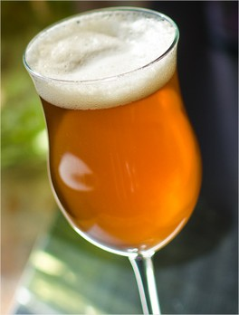
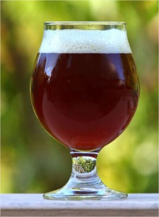
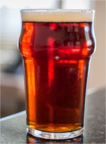
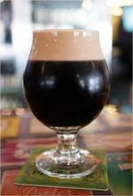
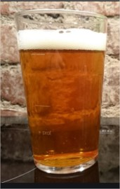

Contamos con gran variedad de Cervezas

La Dorada Pampeana es un estilo argentino de cerveza rubia de
alta fermentación.
bautizado por el reconocido cervecero artesanal, Marcelo Cerdán.
El estilo está adaptado a las posibilidades de la Pampa
Argentina.1 Generalmente se usa sólo malta pálida, aunque también
se suele incorporar entre un 3-5 % de malta caramelo para darle un
tono más dorado. Se utiliza lúpulo patagónico Cascade en la
mayoría de los casos, y levaduras ale secas americanas. Posee un
cuerpo liviano y un sutil amargor que balancea el dulzor de las
maltas.

De un ligero amarillo a un ligero cobre. con una
claridad brillante. La espuma difiere entre un blanco moderado y
un blanco pálido y puede escasear debido a la baja carbonatación.
Goza de un amargor entre medio y alto. La gran mayoría tambiÉn
tienen niveles moderados de Ésteres, bajos o altos en función de
la variedad. Los Ésteres son sabores afrutados que resultan de la
combinación de ácidos orgánicos y los alcoholes, durante la
fermentación.

Complejo, moderadamente especiado y con una abundante presencia
de Ésteres afrutados.
El alcohol y el lúpulo tienen una relevancia entre baja y
moderada. Los Ésteres recuerdan frutas tales como las peras, las
naranjas y las manzanas. El color de las Belgian Golden Ale es
entre amarillo y medio dorado. En general, son cristalinas y
efervescentes.

Cuando hablamos de golden ale o blonde ale nos referimos a
cervezas con una graduación alcohólica bastante ligera.
nunca suele ser demasiado superior al 5%, y con un amargor muy
moderado, inferior a los 30 IBUs.

La bitter es un tipo de cerveza inglesa, derivada originalmente
de la pale ale.
Una versión más fuerte de la misma se ha convertido en una popular
cerveza en botella. El ingrediente principal es cebada malteada,
agregándose lúpulo para mejorar las características, y para dar un
olor y gusto distintivos.

American pale ale es un estilo de pale ale desarrollado en los
Estados Unidos alrededor de 1980.
La American Pale Ale generalmente se sitúa alrededor de 5% abv, y
contienen cantidades significativas de lúpulos americanos,
normalmente Cascade.

La cerveza de trigo es una cerveza, generalmente de
fermentación alta o ale.
que se elabora con una gran proporción de trigo en relación con la
cantidad de cebada malteada.

Dunkel es una palabra utilizada para varios tipos de cerveza
alemana lager oscura.
Dunkel es la palabra alemana que significa «oscuro», y las
cervezas dunkel generalmente varían en color de ámbar a marrón
rojizo oscuro. Se caracterizan por su suave sabor a malta.

La Scottish ale es el nombre por el que se define la cerveza
elaborada en Escocia.
Históricamente, en Escocia era imposible de cultivar lúpulo que
estuviese mínimamente bien; la necesidad de importar lúpulo y el
clima frío de Escocia produjo una cerveza en que la malta era
predominante, con la fermentación de la levadura más limpia que la
cerveza Inglesa. riginalmente, el estilo de las cervezas escocesas
estaba hecho con malta ligeramente marrón, mirto de los pantanos
en lugar de lúpulo para la amargura. Después los elaboradores
usaron más malta tostada y cebada sin maltear para el color. La
cerveza escocesa moderna tiene menos amargura, y un sabor más
dulce o tal vez afrutado debido al mayor uso de la malta. Algunas
pueden tener un gusto ligeramente ahumado

La red ale, conocida también como Irish red ale, es un tipo de
cerveza ale original de Irlanda.
Su ligero color rojo es debido al tostado de la cebada además de
la malta. Las cervezas normalmente son bajas en alcohol, aunque se
elaboran versiones más potentes para su exportación.

Dubbel es la denominación de una cerveza trapista
belga.
El origen de la dubbel fue una cerveza producida en la abadía
trapense de Westmalle en 1856. Desde el 10 de diciembre de 1836
dicha abadía ha producido una witbier que es bastante dulce y de
baja graduación alcohólica para ser consumida por los padres.

Porter es un estilo de cerveza oscura desarrollado en Londres a
partir de cebada malteada marrón.
El nombre se registró por primera vez en el siglo XVIII, y se cree
que proviene de su popularidad entre los porteadores de la calle y
el río, que transportaban objetos para otros.

Stout es el nombre de un estilo de cerveza, tipo ale.
muy oscura, originario de las islas británicas.

Lo primero que hay que aclarar de las cervezas cream ale es que
no tienen ningún ingrediente relacionado a los lácteos.
más bien, el origen de su nombre se debe a su color, que tiene un
tono claro o atenuado. Se trata de un estilo que podría pertenecer
tanto a las familia de las ale, así como de las lager, ya que a
pesar de estar fermentada a temperaturas propias de las ale,
algunas veces estas cervezas utiliza levadura lager, o una mezcla
de lager y ale para su fermentación.

La India pale ale es un estilo de cerveza de tradición
inglesa
que se caracteriza como una ale pálida y espumosa con un alto
nivel de alcohol y de lúpulo